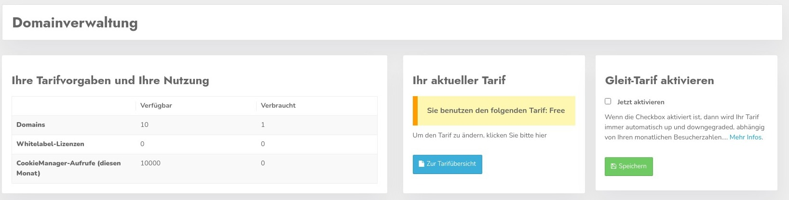
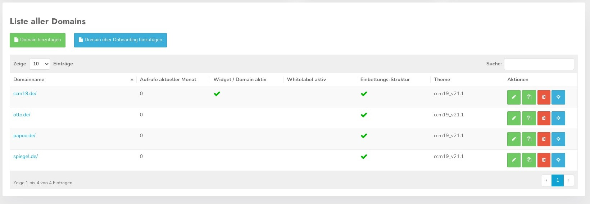
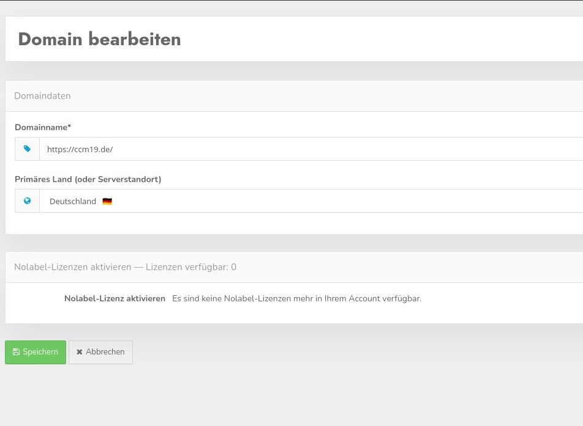
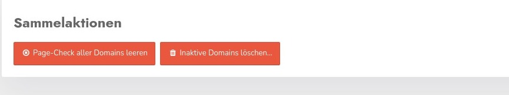

Die Domainverwaltung erreichen Sie über Ihren Namen oben rechts und dann den Punkt "Domainverwaltung". In der Domainverwaltung können Sie Ihre Domains anlegen, bearbeiten und löschen sowie die Whitelabel-Funktion aktivieren oder deaktivieren.
Außerdem sehen Sie einen Überblick darüber, wie viele Aufrufe (Calls) Ihnen zur Verfügung stehen und wie viele Aufrufe bereits verbraucht sind. Ebenso die Anzahl der Domains und die Anzahl der Whitelabel Lizenzen.
Im Bereich daneben wird Ihnen Ihr aktueller Tarif angezeigt - hier der Free Tarif. Mit Klick auf den Button "Zur Tarifübersicht" können Sie von dort aus einen Tarif direkt buchen. Außerdem können Sie die Gleit Tarife aktivieren, allerdings müssen Sie dazu mindestens einen Starter Tarif gebucht haben.

Sie sehen hier wieviele Domains Sie von der verfügbaren schon nutzen, wieviel Whitelabel Lizenzen Sie nutzen und wieviel Cookie Manager Aufrufe diesen Monat schon erfolgt sind.
Die Daten für die Aufrufe werden jeden Monat zum 01. zurückgesetzt.

In der Liste sehen Sie alle Domains die Sie derzeit verwalten. Ein Klick auf den Namen der Domain oder auf den blauen Button ganz am Ende mit dem Stern führen Sie zur Verwaltung eben dieser Domain.
In der Tabelle wird auch angezeigt ob die Domain aktiv ist - also genutzt wird, oder nicht. Ebenfalls wird angezeigt ob die jeweilige Domain als Whitelabel genutzt wird, wieviele Aufrufe diesen Monat schon verbraucht wurden und welches Theme derzeit genutzt wird.
Mit dem blauen Button springen Sie in die Verwaltung der Domain und
Mit Klick auf das grüne Symbold kommen Sie wieder in die Einstellungsmaske wo Sie die Daten für die Domain wieder ändern können.

Mit dem Copy Symbol können Sie einen Eintrag komplett kopieren mit allen Einstellungen.
Mit dem roten Button löschen Sie den Domaineintrag komplett - nach vorheriger Abfrage.

Mit den beiden Buttons müssen Sie vorsichtig umgehen. Der erste löscht alle PageCheck Einträge alle Domains, also alles was Sie im Pagecheck gefunden haben. Der PageCheck überprüft Ihre Domains regelmäßig auf neue Cookies und andere Einträge.
Der 2. Button löscht alle inaktiven Domains. Diese sind dann unwiederbringlich verloren. Ein Backup erfolgt an dieser Stelle nicht, also seien Sie besser sicher was Sie tun :-).